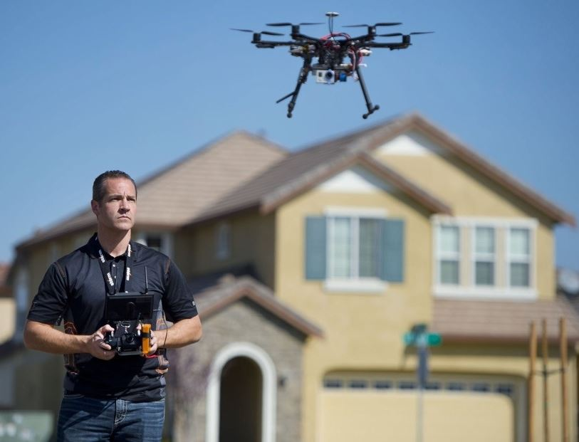

Concerns of UAS Technology
Drones may be useful, but during use, there are several concerns with drone safety. These dangers have required the Federal Aviation Administration to set rules and safety precautions for the use of drones.
Drones may be useful, but during use, there are several concerns with drone safety. These dangers have required the Federal Aviation Administration to set rules and safety precautions for the use of drones.
If drones are not charged properly, the battery can combust causing danger to anything or anyone nearby. Fire hazards of drones don't stop at personal error. Manufacturers can accidentally wire the drone incorrectly. An electrical failure can cause fires from the manufacturers mistake.

Crashing is a frequent concern of using drones. The operators inability to stabilize and control the drone can cause safety concerns. Not only can the user lack the ability to control the drone, but they may forget to charge the battery. The operator may not bring the drone down in time, resulting in the drone to plummet to the ground. Taking precautions and safety measures to prevent crashing is very important when using a drone.
Cutting hazards can be caused by the broken pieces of the drone. Broken fragments on the drone, or even the blades of the drone, can cause bodily harm by cutting you. Receiving a flesh wound from the drone's blades can be very dangerous, depending on the size and depth of the wound.